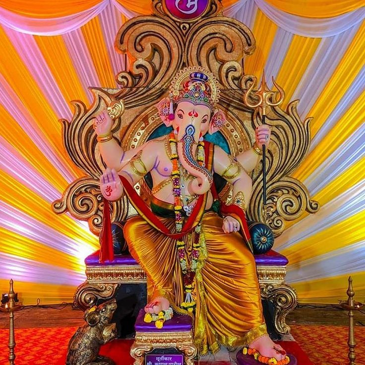

Find your nearest East Indian Catholic community using our interactive map!

❓ How is the East Indian community linked to Mumbai's iconic Ganpati Festival?
The East Indian community has been an integral part of Mumbai’s vibrant Ganpati celebrations, blending centuries-old traditions with local cultural expressions.
Freedom fighter Kaka Baptista, a proud son of the community, drew inspiration from Lokmanya Tilak, who transformed Ganesh Chaturthi into a public festival that mobilized people for unity and independence.
Today, the festival remains a symbol of faith, cultural pride, and community bonding for East Indians and Mumbaikars alike.